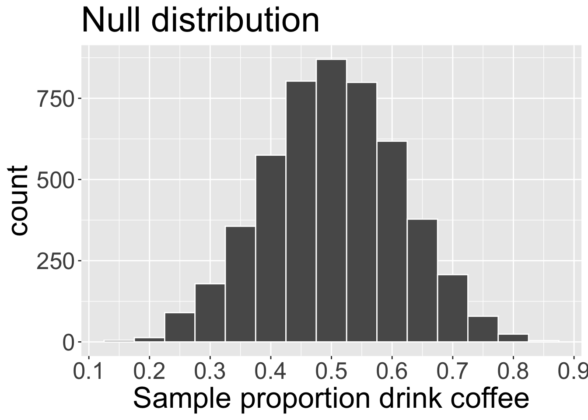
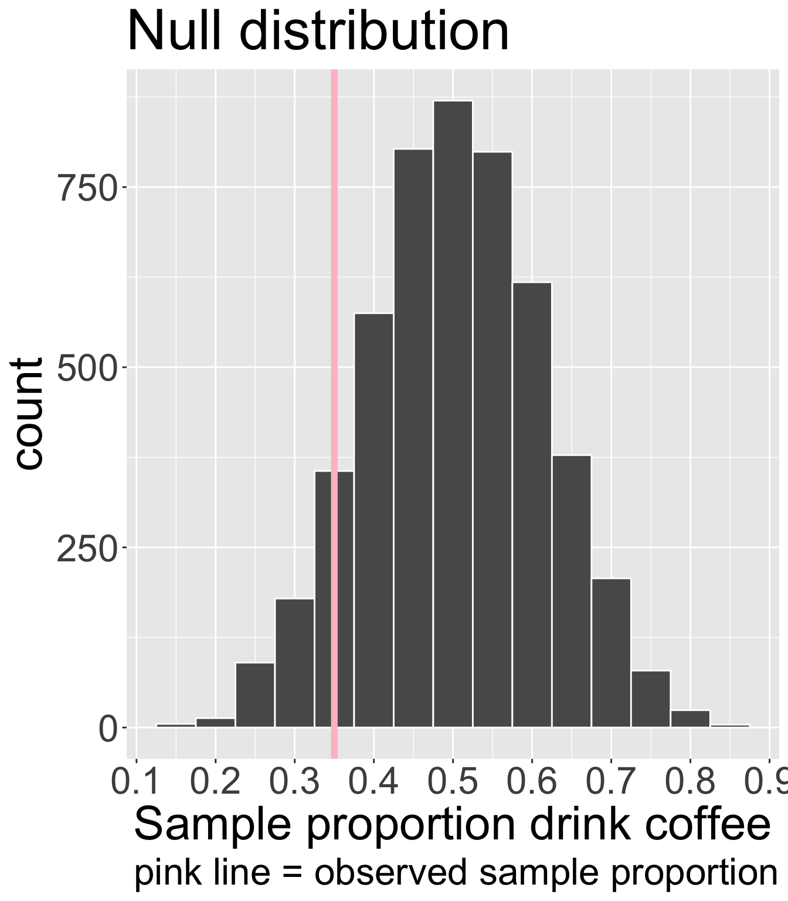
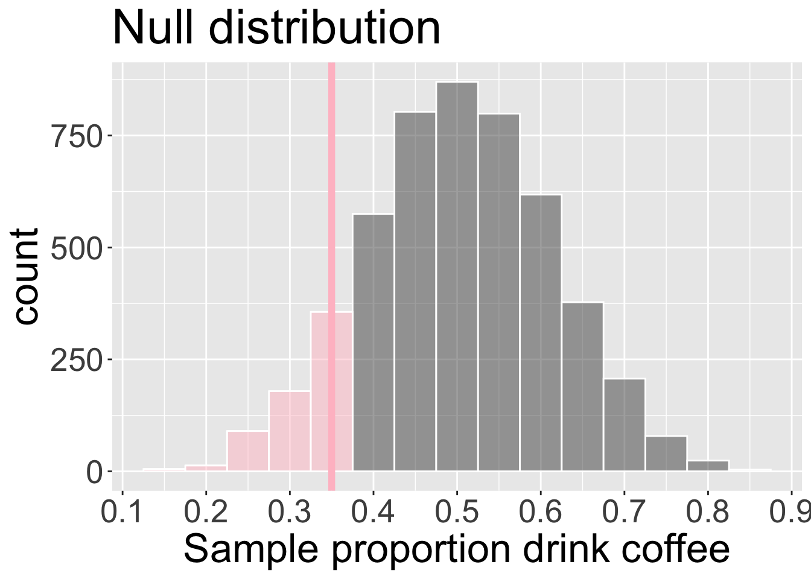
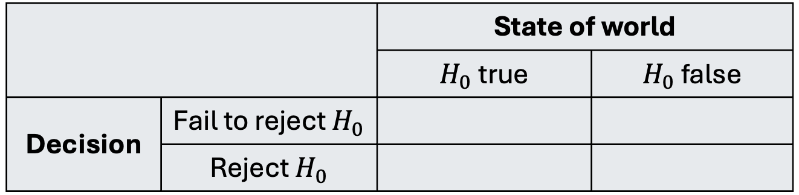
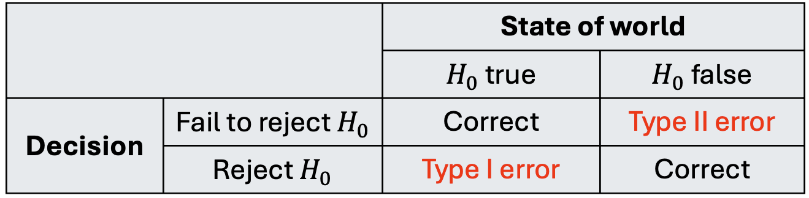

set.seed(2)
B <- 5000
n <- length(x)
null_props <- rep(NA, B)
for(b in 1:B){
null_samp <- sample(x = c("pink", "purple"),
size = n,
replace = T,
prob = c(0.5, 0.5))
null_props[b] <- sum(null_samp == "pink")/n
}Introduction to Hypothesis Testing
Housekeeping
- DataFest groups!
Testing
We are now entering into second branch of inference-related tasks: testing.
We have some “claim”/question about the target population, and we use sampled data to provide evidence for or against the claim
- Especially important in medicine
We will use the hypothesis testing framework to formalize the process of making decisions about research claims.
Because the claim is about target population, we will almost always formulate claims in terms of population parameters
Then we use sampled data to provide the evidence for/against
Hypothesis testing framework
Four stages (we will step through each one):
- Define your hypotheses
- Collect data, set a significance level
- Determine strength of evidence (null distribution, p-value)
- Make decision and conclusion in context
Step 1: Define hypotheses
A hypothesis test is a statistical technique used to evaluate competing claims using data
We define hypotheses to translate our research question/claim into statistical notation
We always define two hypotheses in context: a null hypothesis and an alternative hypothesis
Null hypothesis \(H_{0}\): hypothesis that represents “business as usual”/status quo/nothing unusual or noteworthy
Alternative hypothesis \(H_{A}\): claim the researchers want to demonstrate
It will not always be obvious what the hypotheses should be, but you will develop intuition for this over time!
Practice in defining hypotheses
For each of the following, determine whether it represents a null hypothesis claim or an alternative hypothesis claim:
King cheetahs on average run the same speed as standard spotted cheetahs.
For a particular student, the probability of correctly answer a 5-option multiple choice test is larger than 0.2 (i.e. better than guessing)
The probability of getting in a car accident is the same if using a cell phone then if not using a cell phone.
The number of hours that grade-school children spend doing homework predicts their future success on standardized tests.
Practice in defining hypotheses
For each of the following, determine whether it represents a null hypothesis claim or an alternative hypothesis claim:
King cheetahs on average run the same speed as standard spotted cheetahs.
- Null!
For a particular student, the probability of correctly answer a 5-option multiple choice test is larger than 0.2 (i.e. better than guessing)
- Alternative!
The probability of getting in a car accident is the same if using a cell phone then if not using a cell phone.
- Null!
The number of hours that grade-school children spend doing homework predicts their future success on standardized tests.
- Alternative!
Practice in defining hypotheses
Write out the null and alternative hypotheses in words and also in statistical notation for the following situations:
New York is known as “the city that never sleeps’’. A random sample of 25 New Yorkers were asked how much they sleep they get per night. Do these data providing convincing evidence that New Yorkers on average sleep less than 8 hours per night?
A study suggests that 25% of 25 year-olds have gotten married. You believe that this is incorrect and decide to conduct your own analysis.
Practice in defining hypotheses
New York is known as “the city that never sleeps’’. A random sample of 25 New Yorkers were asked how much they sleep they get per night. Does these data providing convincing evidence that New Yorkers on average sleep less than 8 hours per night?
Words
- \(H_0\): New Yorkers sleep an average of 8 hours per night
- \(H_{A}:\) New Yorkers sleep an average of less than 8 hours per night
Notation: let \(\mu\) be the average hours of sleep of New Yorkers
- \(H_{0}: \mu = 8\)
- \(H_{A}: \mu < 8\)
Practice in defining hypotheses
A study suggests that 25% of 25 year-olds in the US have gotten married. You believe that this is incorrect and decide to conduct your own analysis.
Words
- \(H_0\): the proportion of 25 year-olds in the US who are married is 0.25
- \(H_{A}:\) the proportion of 25 year-olds in the US who are married is not 0.25
Notation: let \(p\) be the proportion of 25 year-olds in the US who are married
- \(H_{0}: p = 0.25\)
- \(H_{A}: p \neq 0.25\)
Defining hypotheses in context
Research question: do the minority of Middlebury students drink coffee regularly?
Try to write down our null and alternative hypotheses in statistical notation! This includes defining parameters!
- Define \(p\) as the true proportion of Middlebury students who drink coffee regularly
- \(H_{0}:\ p = 0.5\) versus \(H_{A}:\ p < 0.5\)
Step 2: Collect and summarize data
Our sample is the convenience sample I took of our class: 1, 1, 1, 1, 1, 1, 1, 0, 0, 0, 0, 0, 0, 0, 0, 0, 0, 0, 0, 0, where 1 = “yes” and 0 = “no”.
Point estimate: \(\hat{p}_{obs} = 0.35\)
Are we prepared to answer our research question based on this evidence?
NO! Due to variability, we should ask: do the data provide convincing evidence that the minority of Middlebury students drink coffee regularly?
Step 3: Determine if we have “convincing evidence”
“Convincing evidence” for us means that it would be highly unlikely to observe the data we did (or data even more extreme) if \(H_{0}\) were true!
We will calculate a p-value: the probability of observing data as or more extreme than we did, assuming \(H_{0}\) true
Note: p in “p-value” is not the same as parameter \(p\)!
This is a conditional probability: we condition on \(H_{0}\) true
Highly unlikely is vague and needs to defined by the researcher, ideally before seeing data.
If we want to provide a yes/no answer to the research question, we need some threshold to compare the p-value to. This is called a significance level \(\alpha\)
Common choices are \(\alpha = 0.05\), \(\alpha = 0.01\) (more on this later)!
For our example, we will choose \(\alpha = 0.05\)
How to obtain p-value?
How to obtain this probability?
Need access to a distribution that corresponds to a world where \(H_{0}\) is true (i.e. the null distribution)
Option 1: if we have assumptions about how our data behave, we can obtain this distribution using theory/math (next week)
Option 2: if we don’t want to make assumptions, why not simulate?
- We will call this option “simulating under \(H_{0}\)”
This is the step that requires the most “work”, and what exactly you do will depend on the the type of data and the research question/claim you have
Simulating under \(H_{0}\) (step 3 cont.)
We have to simulate our data under the assumption that \(H_{0}\) is true (recall \(H_0\): \(p = 0.5\))
Imagine a big bag filled with many slips of pink and purple slips of paper
Pink = coffee-drinkers
Purple = non-coffee-drinkers
- To simulate under \(H_{0}\), what proportion of the slips in the bag should be pink vs purple?
- To simulate under \(H_{0}: p = 0.50\), half of the slips should be pink!
Simulating under \(H_{0}\) (step 3 cont.)
To simulate under \(H_{0}\), we replicate our original sample, this time sampling from this “null world” bag of paper slips
Repeatedly take samples from this null distribution using original sample size \(n =\) 20
For each sample, calculate the simulated proportion of pink slips
Live code?
Null distribution of statistic
We can visualize the distribution of \(\hat{p}\) assuming \(H_{0}\) true:

This is called the null distribution of the sample statistic, which is the distribution of the statistic \(\hat{p}\) assuming \(H_{0}\) is true
Where is this null distribution of \(\hat{p}\) centered? Why does that “make sense”?
Comparing null to observed
Let’s return to our original goal of Step 3! We need to find the p-value: the probability of observing data as or more extreme as ours, assuming \(H_{0}\) were true.
Our observed point estimate was \(\hat{p}_{obs} =\) 0.35
\(H_{0}\): \(p = 0.5\) and \(H_{A}\): \(p < 0.5\)
What does “as or more extreme” mean in this context?
How can we use the null distribution to obtain this probability?

Obtain p-value (step 3 cont.)
We can directly estimate the p-value using our null distribution and our observed \(\hat{p}\)!

- Out of 5000 replications, we saw 643 instances of \(\hat{p} \leq \hat{p}_{obs}\)
- p-value is \(\frac{ 643}{5000} \approx\) 0.13
Step 4: Interpret p-value and make decision
Interpret the p-value 0.1286 in context
Assuming \(H_{0}\) true, the probability of observing a sample proportion as or more extreme as our 0.35 is approximately 0.13
Make a decision about research claim/question by comparing p-value to significance level \(\alpha\)
If p-value \(< \alpha\), we reject \(H_{0}\) (it was highly unlikely to observe our data given \(H_{0}\) and our selected threshold)
If p-value \(\geq \alpha\), we fail to reject \(H_{0}\) (not have enough evidence against the null)
Note: we never “accept \(H_{A}\)”!
Since our p value is greater than \(\alpha = 0.05\), we fail to reject \(H_{0}\). The data do not provide sufficient evidence to suggest that the minority of Middlebury students drink coffee regularly.
Summary of testing framework
Four steps for hypothesis test:
- Define null and alternative hypotheses \(H_{0}\) and \(H_{A}\) in context
- Collect data and set significance level \(\alpha\)
- Obtain the null distribution of the statistic and use it to obtain/estimate p-value
- We did this using by simulating
- Interpret p-value and make a decision in context
Errors in decision
In Step 4, we make a decision but it could be wrong! (Unfortunately, we will never know)
We always fall into one of the following four scenarios:

Identify which cells are good scenarios, and which are bad
Errors in decision

What kind of error could we have made in our example?
It is important to weight the consequences of making each type of error!
- We have some control in this - how? Through \(\alpha\)!
Comprehension questions
What are the similarities/differences between the bootstrap distribution of a sample statistic and the simulated null distribution?
Do you understand what a p-value represents, and how we obtain it from the null distribution?
What role does \(\alpha\) play? Why is it important to set \(\alpha\) early on?